:
"... a central repository of integrated data from one or more sources. It stores current and historical data. It can be used for performing analysis and creating reports for knowledge workers throughout the enterprise."
:
"... a central repository of integrated data from one or more sources. It stores current and historical data. It can be used for performing analysis and creating reports for knowledge workers throughout the enterprise."A database is essential for storing data. But being able to apply that data for business purposes is what makes a database valuable: being able to retrieve relevant data, quickly and easily, and putting the data to work within your applications.
But many of the storage, processing, and analytics tasks you perform with the data are used again and again in your applications. Or they might be good examples of industry best practices.
So, it makes sense to extend standard database capabilities with additional features, supporting tasks such as reporting, or analytics.
For nearly 30 years, 'Data Warehouses' have been the industry standard for data storage, reporting, and analytics, based on relational database technology. In general, a data warehouse is :
"... a central repository of integrated data from one or more sources. It stores current and historical data. It can be used for performing analysis and creating reports for knowledge workers throughout the enterprise."
The technologies that enable data storage, reporting, and analytics have emerged in recent years as a response to the need to process 'Big Data ':
"Big data is a term for data sets that are so large or complex that traditional data processing applications are inadequate."
At the same time, the properties and characteristics of Data Warehouses and related products mean that using relational database technology to enable the Data Warehouses is a popular choice, even for big data tasks.
There are many use cases that nicely illustrate the benefits of integrating Cloudant capabilities with a relational data warehouse, such as the following examples.
Joining data from multiple data stores for cross-domain analysis is a task that can be performed easily and efficiently using a relational data warehouse.
Data from different sources is prepared and transformed to a common format during the load of a data warehouse. Records are stored in tables, and operations are available to join those tables to enable combined analysis.
Doing the join in a relational data warehouse is especially useful if some of the data is already available in relational representation, for example master data or reference data.
Cloudant databases are flexible at representing data. For example, they do not enforce a schema during read or write.
By contrast, a well-defined and rigorously enforced model is required for reporting and analytics tasks.
With your documents available in a relational warehouse you can base your model on a fixed set of table definitions. Only documents that fit the table schema can get loaded while violations are rejected. You can train your models with consistent data using a fixed relational schema.
Data Warehouses can use constraints to assert data integrity. For example:
Uniqueness, correctness, and completeness are essential requirements for any enterprise service. Loading your Cloudant documents into a data warehouse helps you meet these requirements.
Data Warehouses are a mature and important technology. Cloudant provides a tight integration with relational data warehouses, giving you the benefit of this technology.
IBM Cloudant has a basic warehousing capability built in, in the form of MapReduce views that enable you to perform a range of basic analytical tasks.
For more advanced warehousing tasks, you can leverage the full capabilities provided by the IBM cloud-based warehousing service IBM dashDB .
When you use IBM Cloudant, you have integrated and easy access to advanced warehousing capabilities, such as:
These advanced warehousing capabilities are enabled through services such as IBM dashDB, which is a natural complement to Cloudant.
Alternatively, if you only need a relational data store for your documents, without the warehousing capabilities, you can load your Cloudant documents into the IBM DB2 on Cloud service.
IBM dashDB is a cloud-based data warehouse service, purpose-built for analytic work. While especially suited for Cloudant JSON data, dashDB can accept data from a variety of sources by examining the structure of data when it is loaded.
For more information, see the IBM dashDB Cloud Data Warehouse documentation .
IBM DB2 on Cloud provides you with a database on IBM's SoftLayer®
global cloud infrastructure. It offers you the rich features of an on-premise DB2 deployment, but without the cost, complexity, and risk of managing your own infrastructure.
For more information, see the IBM DB2 on Cloud documentation .
There are two ways you can create a warehouse:
The simplest method for creating a warehouse is for Cloudant to create a dashDB warehouse instance within Bluemix, on your behalf. Do this by clicking the Create Warehouse button on the Warehouse task within the Integrations tab of your Cloudant dashboard.
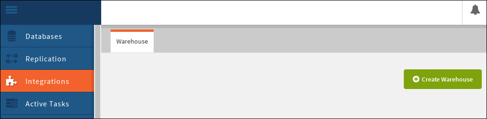
If you are not already logged in to Bluemix, you are asked to do so.
Note: By default, Cloudant creates a dashDB instance on Bluemix for your warehouse.
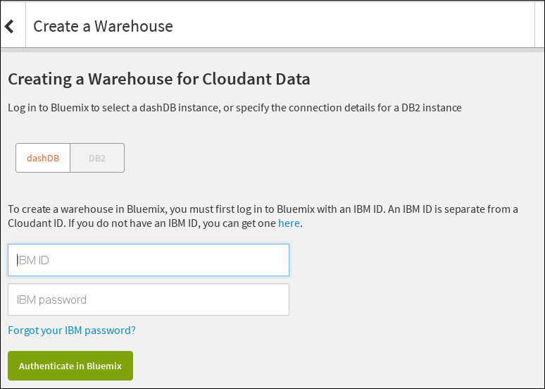
When you have authenticated, you can request that a new dashDB instance is created using your Bluemix account. To do this:
Warehouse Name field.Data Sources field.Create new dashDB instance option is selected on the form.Create Warehouse button.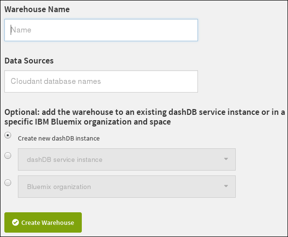
Instead of using Cloudant to create the dashDB warehouse database, you can connect to an existing dashDB instance.
The process is similar to using Cloudant to create a dashDB warehouse, however instead of selecting the Create new dashDB instance option, select the dashDB service instance and choose the dashDB warehouse that already exists within Bluemix.
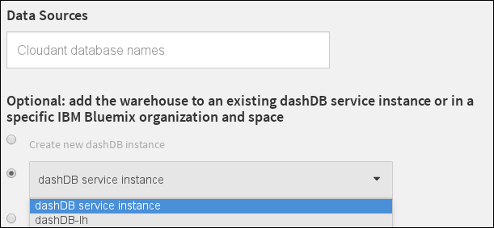
If you prefer, you can connect to an existing DB2 warehouse instance instead of dashDB. Do this by selecting the DB2 option within your Cloudant dashboard to connect to an existing DB2 instance.
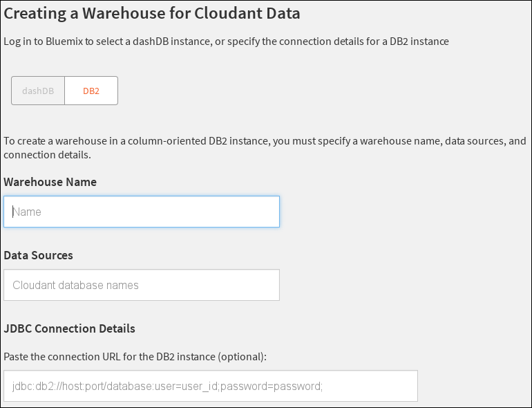
If you want to connect to a DB2 instance, you must provide the following details:
Note: The remainder of this topic refers to dashDB as the warehouse instance. However, the topic applies equally if you are using an instance of DB2. A tutorial is also available describing how to load JSON data from Cloudant into dashDB
When you first create a warehouse from within Cloudant, dashDB creates the best possible schema for the data within the database, helping ensure that each of the fields within your JSON documents has a corresponding entry within the new schema. Optionally, when creating the warehouse, you can choose to customize the schema manually.
Once the schema is created, the warehouse is able to hold your data in a relational format. Cloudant then replicates to perform an 'initial load' of the database documents into the warehouse, giving you a working collection of your data in the dashDB relational database.
Over time, your Cloudant database content might change. You can modify the schema of an existing warehouse.
Note: If you modify the schema of an existing warehouse, the data from your Cloudant database must be replicated again into the warehouse database. In effect, modifying the schema causes a fresh 'initial load' into the warehouse.
With Cloudant warehousing, you can run 'traditional' SQL queries, and view the results, all from within the dashDB console.
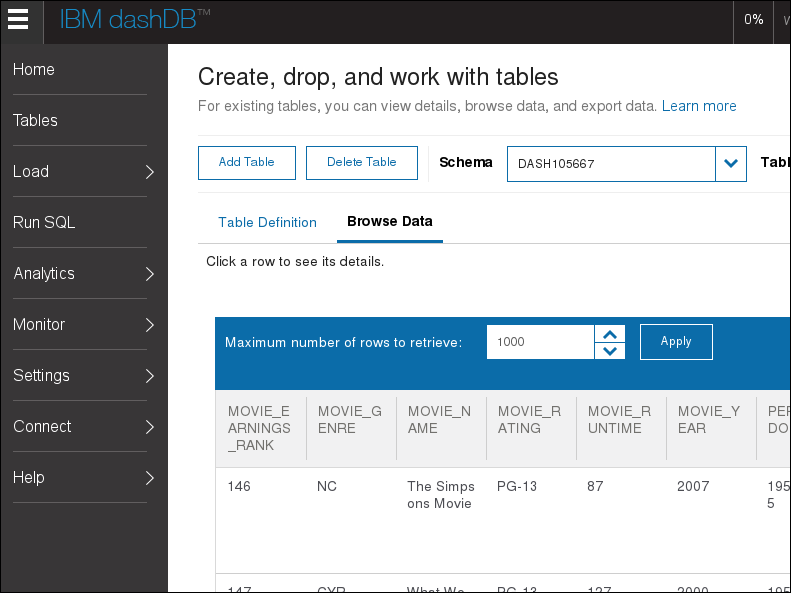
External applications can interact with the data in the same way as with any other relational database.
The advantage of dashDB is that you can perform other warehousing tasks, such as loading more data from other sources, and analyzing the data using built-in analytic tools. DashDB supports the
'R' programming language and software environment
for statistical computing and graphics. This means you have access to algorithms that let you perform database analytic tasks such as linear regression, 'k-means' clustering, and geospatial analysis.
The RStudio tool allows you to create 'R' scripts which are then uploaded into dashDB, then run using your data.
For more information about working with dashDB, see the IBM dashDB Cloud Data Warehouse documentation .
Data is loaded from Cloudant into dashDB using a replication process. This means that if your Cloudant data is updated or modified in some way, replication of the documents into dashDB must take place again to ensure your analytic tasks continue to work using the most up-to-date information.
As with normal Cloudant replication, data is transferred one-way only: for a warehouse the transfer is from Cloudant to dashDB. After the initial load of data, the warehouse subscribes to data content changes in the Cloudant database. Any changes are replicated from the Cloudant source to the dashDB target. This means that warehousing is a form of continuous replication from Cloudant to dashDB.
Over time, your Cloudant database might also have structural changes. This might include the addition or removal of fields from the JSON documents. When this happens, the schema used by the warehouse might become invalid, resulting in errors reported when fresh data is replicated from Cloudant to dashDB.
To solve this problem, Cloudant warehousing has a 'rescan' facility. This rescans the structure of the Cloudant database, and determines the new schema required in dashDB. The old tables within dashDB that were created during the previous scan are then dropped, new tables created using the new schema, and finally the current Cloudant data is loaded as a fresh 'initial load'.
To use the rescan facility, first ensure that your warehouse is not running. Do this as follows:
Integrations tab within the Cloudant dashboard.Warehouse task:Stop Database icon in the Actions column:Rescan icon in the Action column is enabled: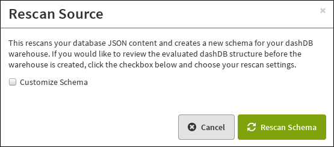
When you click the Rescan icon, you have two choices:
If you choose the default action of a simple rescan, your source database is inspected and a fresh warehouse database schema is generated. As soon as the rescan completes, the warehouse is started.
If you want to customize the warehouse schema, enable the Customize Schema checkbox, before clicking the Rescan button.
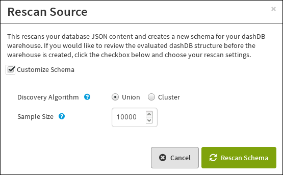
The Customize Schema checkbox enables two options.
The default option for rescanning is the Union algorithm. This uses all the attributes in all the sampled Cloudant database documents to create a single set of tables in the warehouse database. The result is that all the Cloudant database
documents can be stored in the warehouse database, but some rows in the database might not have content in some of the fields.
The alternative option for rescanning is the Cluster algorithm. This identifies documents within the Cloudant database that have the same set of attributes, then creates corresponding warehouse database table schemas.
This option determines how many documents within the Cloudant database are inspected as part of the schema determination.
The default value is 10,000 documents.
Setting the value too low introduces the risk that some Cloudant documents have attributes that are not detected, and are therefore omitted from the warehouse database structure.
Setting the value too high means that the scanning process to determine the warehouse database structure takes longer to complete.
Once the Cloudant database rescan has finished, the warehouse is not automatically started. Instead, it remains in a halted state, so that the warehouse database can be customized.
It is possible to modify the database schema that is determined automatically during the initial warehouse creation process, or after a rescan. To do this, ensure that you check the Customize Schema option during the creation process:
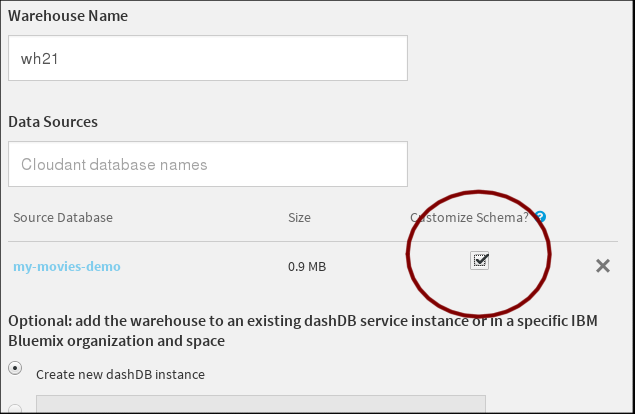
The warehouse is created in dashDB as normal, however it is not started immediately. Instead, you have the opportunity to customize the schema before proceeding.
To do this, click the link for your warehouse:
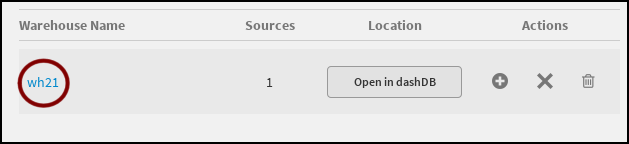
The resulting display gives you a button to customize the schema used for your source database. Hovering over the Status indicator confirms that the schema is ready for customization:
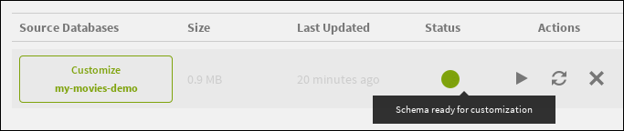
Clicking on the 'Customize' button results in a panel where you can modify the fields in the database schema:
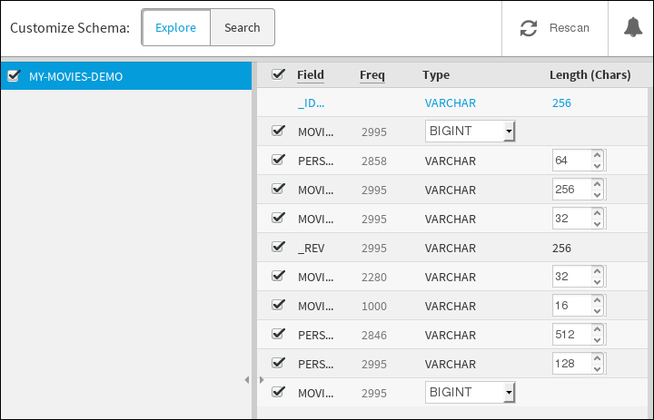
To reset the schema to the default, click the Rescan button:
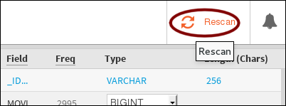
When you are happy with the database schema for the warehouse, simply click the Run button:
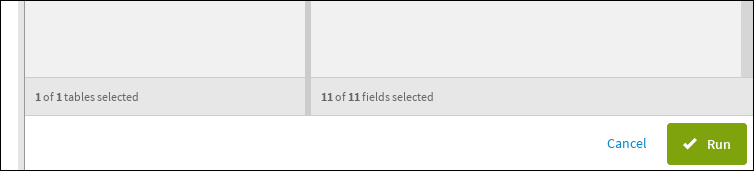
The schema is saved, and the warehouse is started.
If the database schema for your warehouse already exists, you have the option to customize it.
From time-to-time, you might encounter problems when using the warehousing facility. Information on some of these problems is provided later in this topic.
Additionally, discussion of some common errors or problems, as well as details of how to troubleshoot them, is available in Stack Overflow .
If you need further help, and can't find solutions in Stack Overflow, please contact Cloudant support .
Sometimes, the warehouse encounters an error condition. For example, if you try to create a warehouse using an existing DB2 database, but fail to enter the correct database details, then warehouse cannot be created successfully.
When an error condition exists, the status of the warehouse is changed to a red circle, indicating that there is a problem requiring your attention:
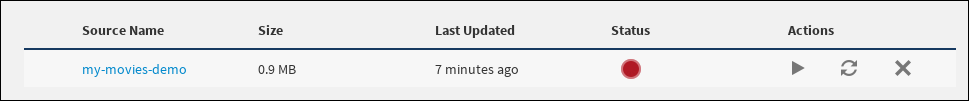
If you 'hover' over the indicator, a little more information is supplied:
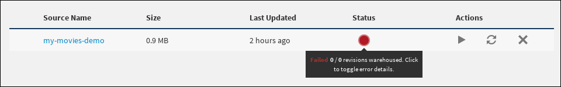
When you click on the indicator, a window appears giving you more details about exactly what the problem is. In this example, the host details entered for the DB2 connection were not valid:

Changes in the Cloudant database are replicated across into the warehouse database. It is possible that a change might not fit into the warehouse or its schema. Problems of this kind are detected and logged in the OVERFLOW table of the
warehouse database.
For example, if the warehouse schema has a Movie_earnings_rank field of type VARCHAR, and can hold up to 32 characters, but a change in the Cloudant database requires storage of 40 characters, then the field 'overflows'.
This would produce a 'warning' condtion, which is indicated in the status icon of the warehouse dashboard:
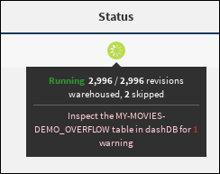
Looking in the indicated overflow table in the warehouse database, you see more details about the warning:
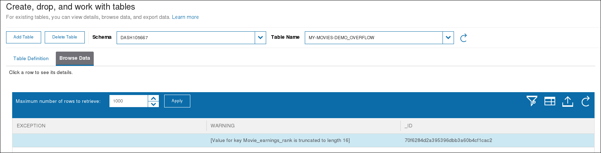
In this example, the warning makes it clear that a truncation has occurred, affecting the Movie_earnings_rank field of the Cloudant document having an _ID of 70f6284d2a395396dbb3a60b4cf1cac2.
There are two possible solution options:
The option you choose depends on whether the extra content in the field is intentional or not. If you do require the extra content for your application, then it is necessary to update the warehouse schema to remove the warning condition.
A more significant problem is if an entirely new field is introduced into a document in the Cloudant database, but the field does not have a counterpart in the warehouse database schema. This causes an 'error' condition.
For example, a document in the Cloudant database might 'gain' an extra field called my key that does not exist within the warehouse database schema:
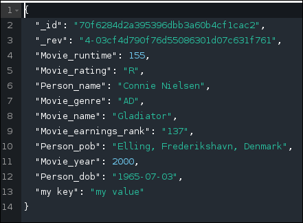
The result is an error condition, which is indicated in the status icon of the warehouse dashboard:
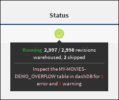
Looking in the indicated overflow table in the warehouse database, you see more details about the error:
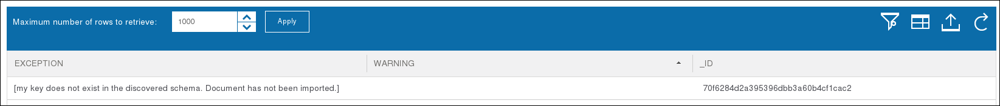
In this example, the error makes it clear that a field has been encountered that was not present when the warehouse database schema was created. The field itself was detected in the Cloudant document having an _ID of 70f6284d2a395396dbb3a60b4cf1cac2.
There are two possible solution options:
The option you choose depends on whether the extra field is intentional or not. If you do require the extra field for your application, then it is necessary to update the warehouse schema to remove the error condition.